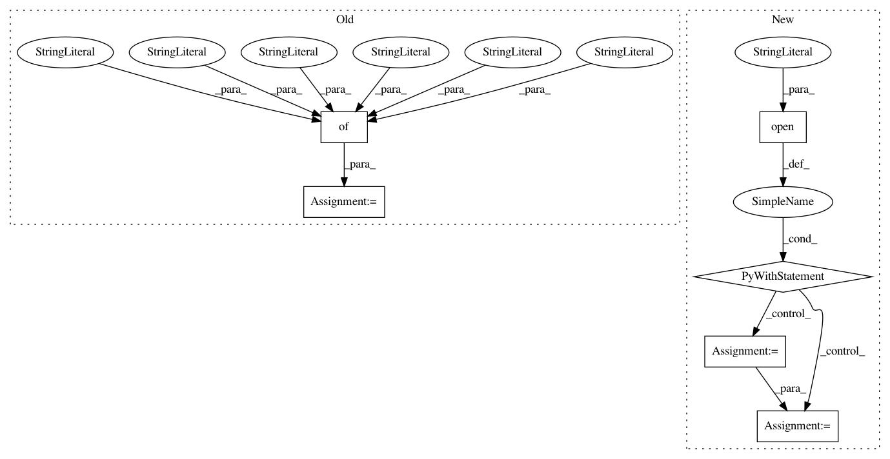

b261f6e44d93d4a9d767d81add53f0f9071a42bb,lazyflow/utility/io/tiledVolume.py,TiledVolume,_retrieve_tile,#TiledVolume#Any#Any#Any#Any#,130
Before Change
shutil.rmtree(tmpdir)
def _retrieve_tile(self, tmpdir, tile_roi_in, tile_relative_intersection, data_out):
rest_args = { "z_start" : tile_roi_in[0][0],
"z_stop" : tile_roi_in[1][0],
"y_start" : tile_roi_in[0][1],
"y_stop" : tile_roi_in[1][1],
"x_start" : tile_roi_in[0][2],
"x_stop" : tile_roi_in[1][2] }
tile_url = self.description.tile_url_format.format( **rest_args )
tmp_filename = "z{z_start}_y{y_start}_x{x_start}".format( **rest_args )
After Change
if r.status_code == requests.codes.not_found:
data_out[:] = 0
else:
with open(tmp_filepath, "wb") as f:
CHUNK_SIZE = 10*1024
for chunk in r.iter_content(CHUNK_SIZE):
f.write(chunk)
// Read the image from the disk with vigra
img = vigra.impex.readImage(tmp_filepath, dtype="NATIVE")
assert img.ndim == 3
assert img.shape[-1] == 1
In pattern: SUPERPATTERN
Frequency: 3
Non-data size: 6
Instances
Project Name: ilastik/ilastik
Commit Name: b261f6e44d93d4a9d767d81add53f0f9071a42bb
Time: 2014-07-22
Author: bergs@janelia.hhmi.org
File Name: lazyflow/utility/io/tiledVolume.py
Class Name: TiledVolume
Method Name: _retrieve_tile
Project Name: aws/sagemaker-python-sdk
Commit Name: 1787f783e2f9fc4f2144bd4b4f90281a2bb018b5
Time: 2019-03-11
Author: andremoeller@users.noreply.github.com
File Name: tests/integ/test_inference_pipeline.py
Class Name:
Method Name: test_inference_pipeline_model_deploy
Project Name: MIC-DKFZ/trixi
Commit Name: f04c2384c98e80b37ac442f5e0fb6152d4ee059e
Time: 2019-03-01
Author: t.adler@dkfz-heidelberg.de
File Name: trixi/logger/visdom/numpyvisdomlogger.py
Class Name: NumpyVisdomLogger
Method Name: show_svg